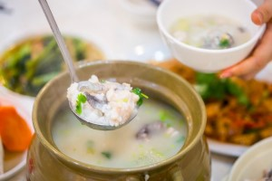
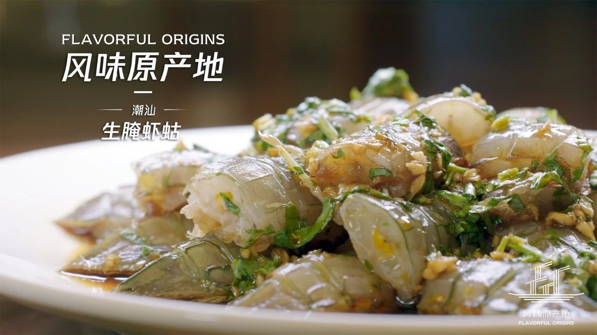
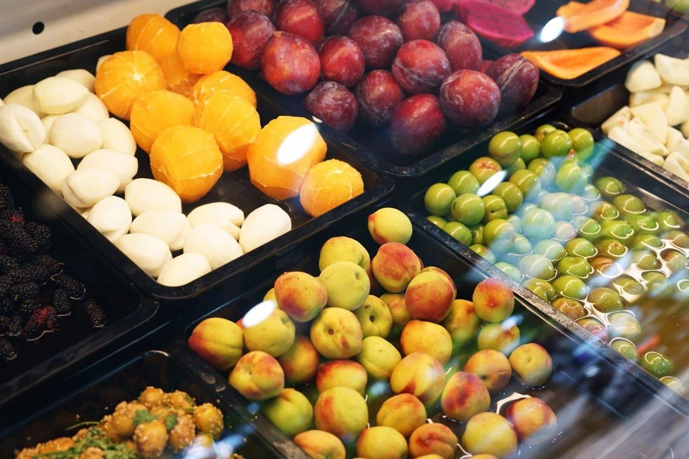
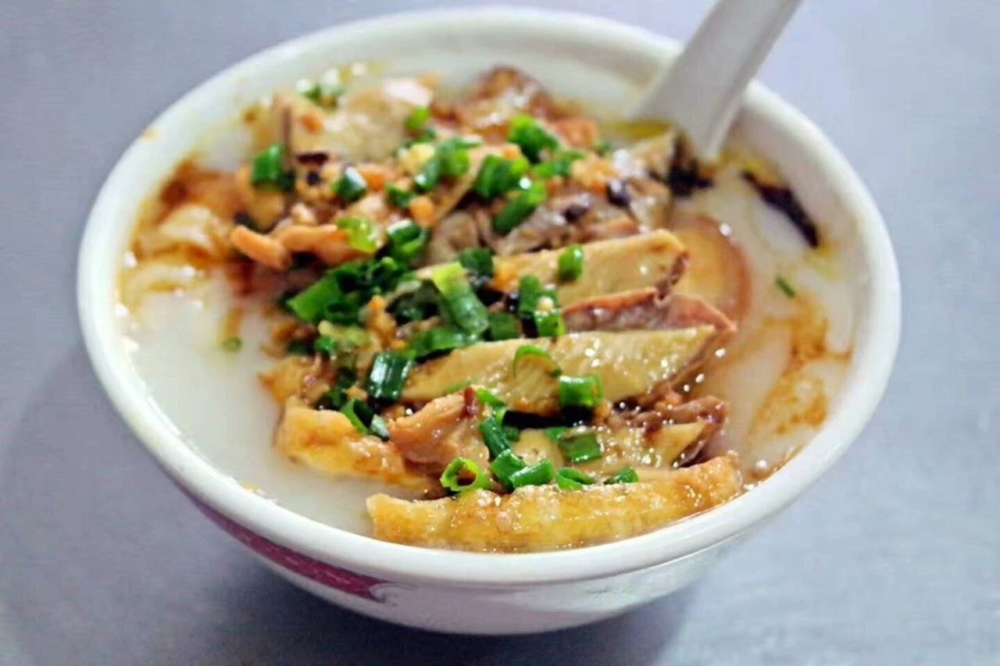
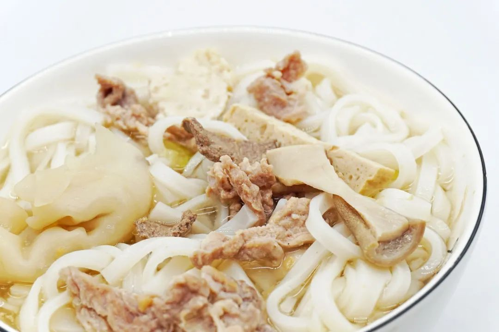
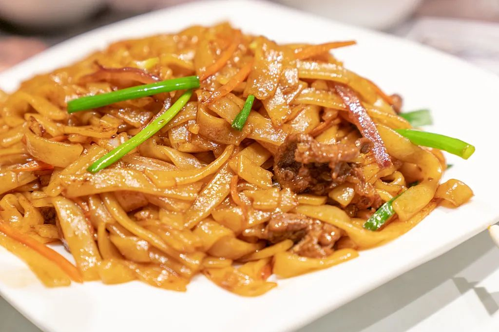
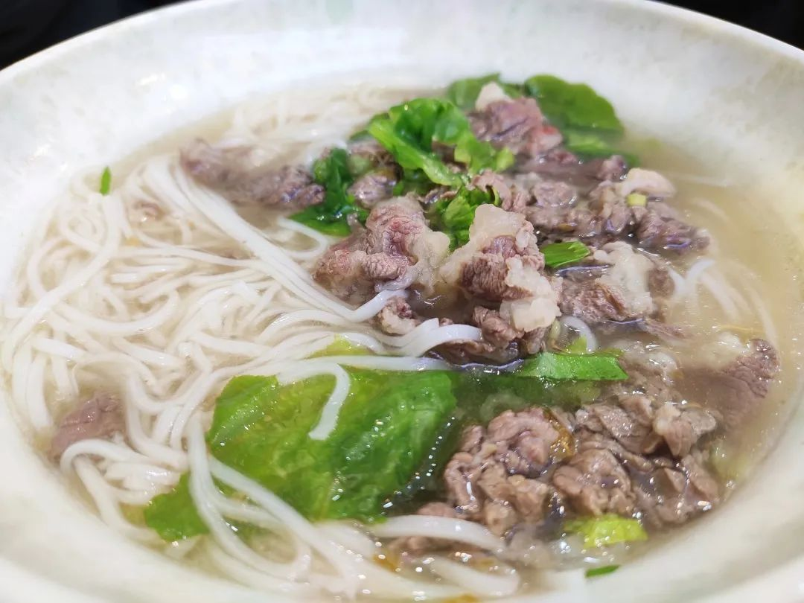
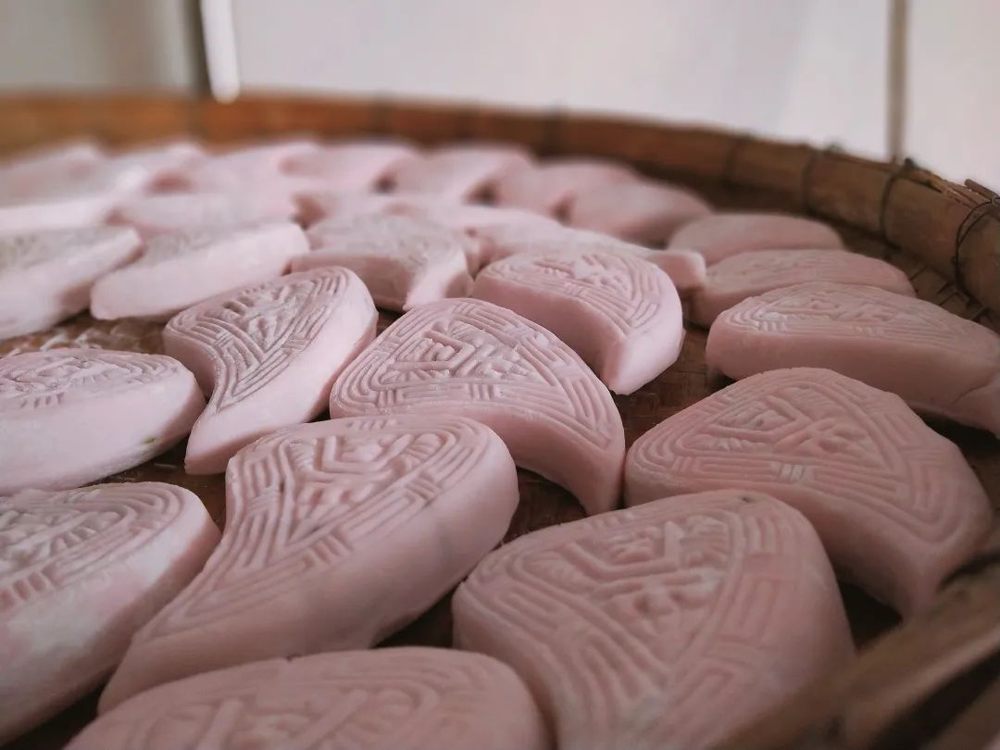
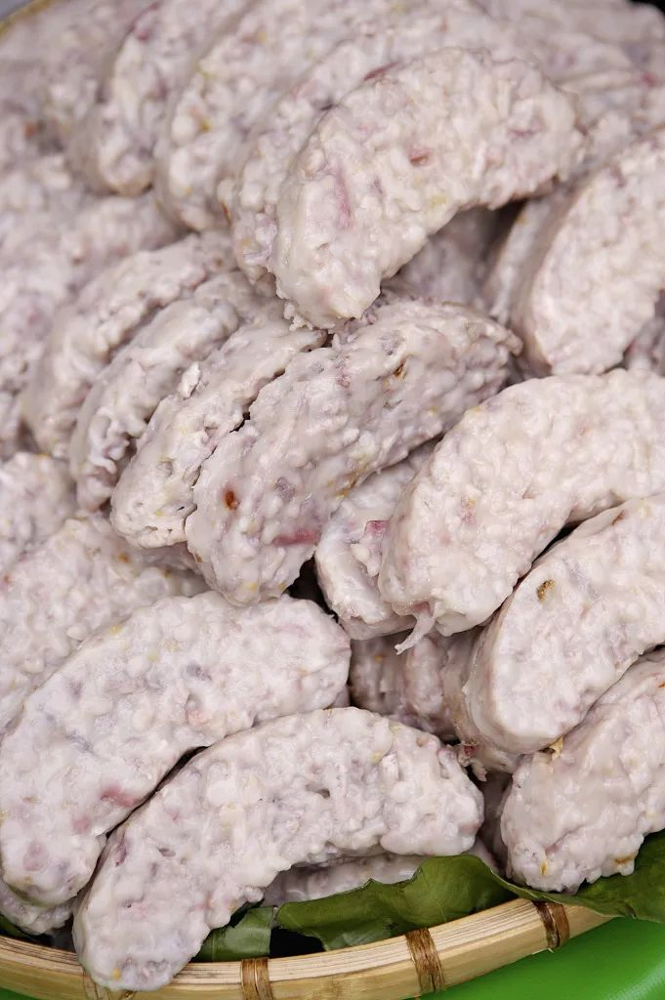

Clematis-一个帮你生成个人网站的助手









美食日记
千万别把潮汕人挂在嘴边的“鱼饭”和“炒饭”、“盖浇饭”混为一谈，所谓鱼饭，是指鲜鱼不经打鳞劏肚去腮，洗净后用盐水浸泡，装于小竹筐中再放入大锅里用高浓度盐水煮熟，晾凉后即成鱼饭。鱼饭最大限度保留了鱼的原味，佐以普宁豆酱，鲜美无比。鱼饭在最大程度保持海鲜原味的同时，也能存放更长时间。在潮汕的大小市场和排档，都能看到用竹篮装的鱼饭，尤以那哥鱼、秋刀鱼、鲷鱼等最多，铺篮的时候常铺成菊花状，非常好看。鱼饭是潮汕最有特色的家常美味，也是最受欢迎的“打冷”，放在冰箱里鲜冻后再吃依旧不失鲜嫩。
广东人常说“宁可食无菜，不可食无汤。”先上汤、后上菜，几乎成了广东宴席的标准流程。如果有一顿饭没有汤，那么这顿饭是没有灵魂的。广东人对于煲汤，有一份自己独特的理解。南粤的汤，食材搭配多结合中医里的食疗，其地位与凉茶并驾齐驱，共同滋养着爱吃会吃的广东人民。久而久之，广东靓汤衍生出多种做法。一般常见有7种做法：煲汤、滚汤、炖汤、清汤、汆汤、汤泡、烩羹等。清汤是指做好了把汤淋进去，汆汤则是指将原料摆好，开水冲进去，烩羹则是类似平时的勾芡，是指加淀粉做汤。这7种中最有名的自然是老火靓汤，又称明火煲汤，是用明火直接煲出来的，得到的汤汁也是最浓稠的一种。
潮汕咸粥又细分为两种：潮汕泡粥和潮汕砂锅粥。因为潮汕地区是沿海一带的地方，所以海鲜丰富，连煮粥的时候都以海鲜为原材料，在加入潮州菜的独特配料，风格独树一帜，在各地都颇受欢迎。泡粥是用白饭来煮泡的粥，例如蚝仔肉碎粥、鲍鱼肉碎粥、什会泡粥等，通常用料在两种以上。潮州砂锅粥在广州盛行一时，仍然有不少砂锅粥专门店。粥如其名，用砂锅、生米明火煲粥，粥七成熟的时，放原料在加配料煮成。经典的粥品有砂锅生鱼粥、砂锅海虾粥、砂锅膏蟹粥等。